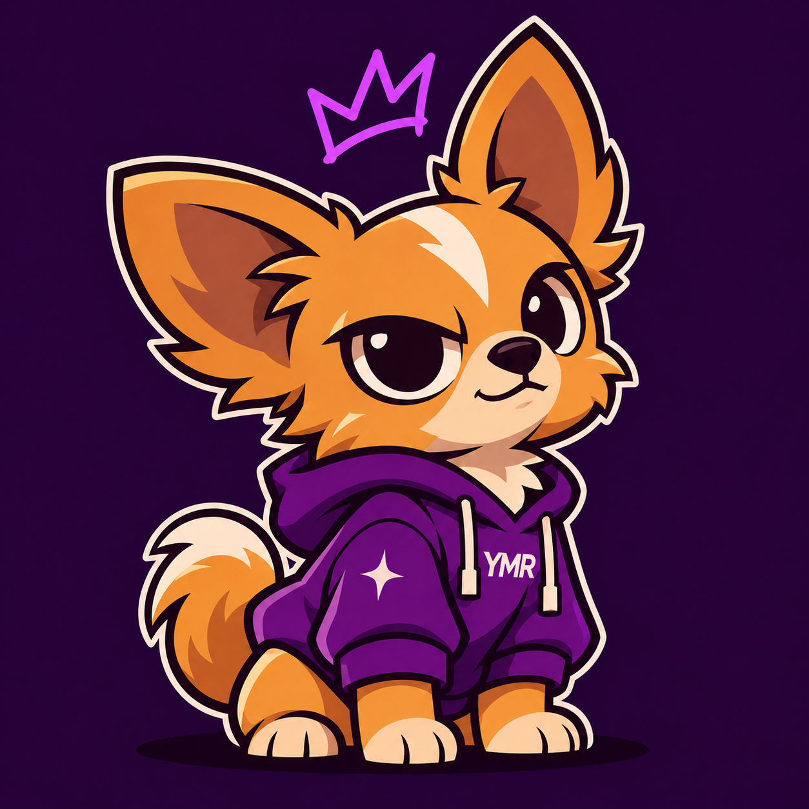

Feito para
marcar.
Ideias que viram presentes, histórias que viram estampas e detalhes feitos para serem seus.
Encontre o seu universo ↘grandes significados.
Bem-vindo ao
mundo YMR.
A gente acredita que objetos do dia a dia podem carregar personalidade. Criamos produtos autorais, presentes personalizados e ideias especiais para marcas.
cuidado em cada detalhe
feita para você
próximo e humano
Qual é o seu mundo?

Feito com
amor de pet.
Personalizados para quem faz parte da família.
Vista uma
história.
Estampas originais com identidade e significado.
Sua marca,
em boas mãos.
Brindes criativos para empresas e eventos.
Ideias fora
da caixinha.
Uma seleção de produtos diferentes e especiais.
CRIATIVO
Uma marca feita
de ideias vivas.
A YMR transforma referências, afetos e boas ideias em produtos com personalidade. Cada coleção é um convite para encontrar algo que tenha a sua cara.
Conheça a YMR ↗Pet, com todo
o seu jeitinho.
Uma lembrança do seu melhor amigo em objetos que fazem parte da rotina.
SANCTUM
Fé, história e símbolos em uma coleção de atmosfera gótica.
YMR
STUDIO
Brindes que
ficam na memória.
Produtos personalizados para empresas, eventos e boas-vindas.
YOUR MOMENT
Um pouco de
tudo.
Produtos variados, criativos e cheios de possibilidades.
Como funciona
o seu pedido?
Escolha
Encontre seu produto e selecione as opções disponíveis.
Personalize
Para itens personalizados, envie suas referências após a compra.
Receba
Confira as opções de envio e acompanhe seu pedido.
Ficou com
alguma dúvida?
Separamos algumas informações úteis para você.
Como funciona a personalização?＋
Depois da compra, você recebe as orientações para enviar as fotos, nomes ou referências necessárias. A arte é preparada e enviada para sua aprovação.
Como calculo o frete?＋
Na etapa de compra, informe seu CEP para consultar as opções de envio disponíveis.
Como entro em contato?＋
Você poderá falar com a YMR pelo WhatsApp ou pelos canais de atendimento informados no rodapé.
Meu pagamento é seguro?＋
O checkout será integrado a um provedor de pagamento para processar os dados de forma segura.